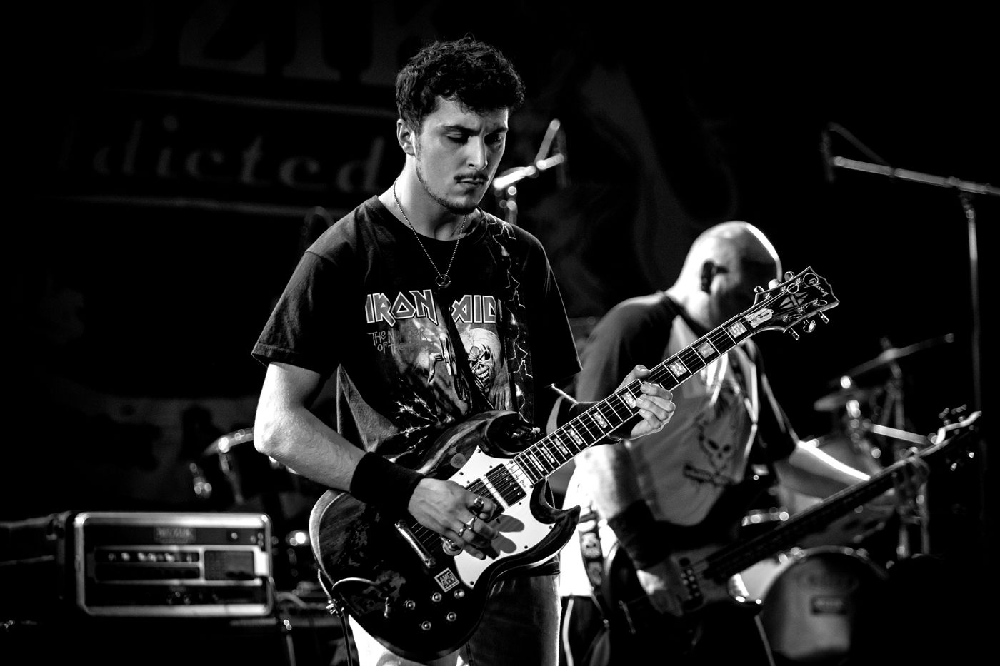
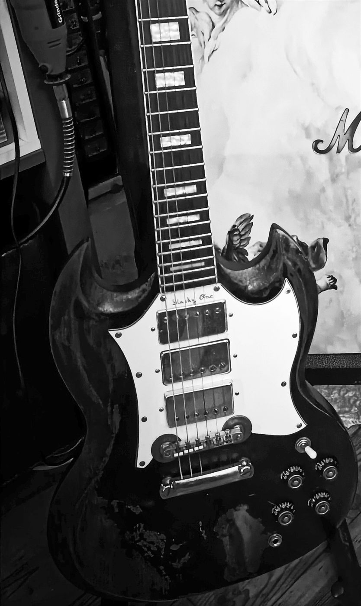
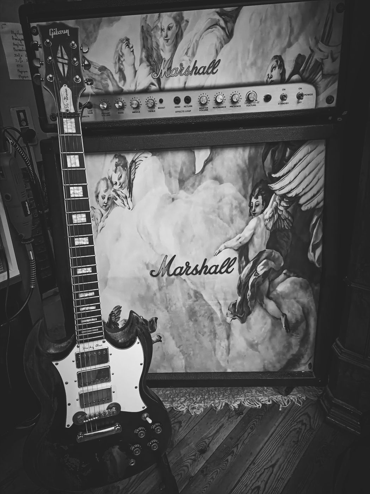

Who am I?
Hello and welcome! To make sense of this site and what's on it, let me introduce myself — a short tour of my story, my studies, and my passion for music and everything that amplifies it.
Music
It all started at 14, when I spotted an AC/DC vinyl at a relative's place and fell for rock. Until then my musical culture was thin — mostly charts and rap. In my last year of middle school I decided to take electric guitar lessons, and that began a passion for an instrument that connects so many crafts: lutherie, woodworking and electronics.
Five years followed at the Muzik-Adicted music school, with two stage performances every year. Playing in front of several hundred people sharpened my creativity, broadened my musical culture — and gave me back a lot of confidence.


First modifications
A tinkerer at heart, I couldn't resist taking my instrument apart myself the first time it broke down. Once inside, I was fascinated by how simple the electronics were: two potentiometers for volume, and two more in series with capacitors to roll off the high frequencies.
That's how I got into electronics and electric guitar construction. After a few months spent learning to solder, my guitar's electronics were completely replaced — from the humble tone capacitor all the way to the pickups. Once I had tried several pickup wiring schemes, it was time to move on to aesthetics.
A passion for electronics
Electronics sits at the heart of how an electric guitar works, and I use it constantly to shape the sound I want. Following schematics available online, I have built several active accessory modules for the instrument.
Beyond sound, electronics has taken a big place in my spare time. It lets me repair, modify or build a whole range of everyday devices — lamps, audio speakers, and more.


Towards a "vintage" aesthetic
Passionate about old amps, speakers and guitars, I like reproducing the style and wear of vintage models down to the smallest detail. I prepare ageing dyes (caffeine, rust…) and simulate the oxidation of metal parts with acids.
Being a history nerd about electric guitars, I also make a point of using components and parts close to the originals for visual fidelity — and I sometimes borrow from classical art to re-dress my speaker cabinets and amplifiers, like the hand-painted Marshall stack in the photo.
My academic journey
My academic and technical interests lie at the intersection of acoustics, signal processing, electroacoustics and sound engineering — understanding and designing the systems that generate, shape and analyse sound, from musical instruments to complex acoustic environments. It all grew out of a passion for electric guitars and rock music.
Musical training — electric guitar, alongside a scientific high-school program
Studied electric guitar and live performance at the Muzik-Adicted music school, with regular stage performances. High-school studies focused on physics and engineering sciences, laying the foundation for what followed.
Electronics and instrument modification
Early experimentation with guitar electronics sparked an interest in circuit design, soldering and audio system modification: pickup rewiring, tone circuit modifications and small electronic modules for musical equipment.
Bachelor in Acoustics and Vibrations
Two years of a Bachelor's degree in general physics and chemistry at Université Jean-François Champollion, Albi (France), then a specialised Bachelor's degree in Acoustics and Vibrations at Le Mans Université (France).
- Wave physics and acoustics
- Structural vibrations
- Signal processing
- Electroacoustics
- Room acoustics
- Measurement techniques and metrology
MSc Music and Acoustic Engineering
Currently pursuing the Master's degree in Music and Acoustic Engineering (Acoustic Engineering track) at Politecnico di Milano (Italy).
- Audio signal processing
- Machine learning for audio
- Electroacoustic systems
- Acoustic modelling and vibration analysis
- Music information retrieval
Research interests
- Medical acoustics — speech signals & breathing physiology
- Audio signal processing & machine learning
- Acoustic modelling & vibration analysis
- Music information retrieval
- Vintage audio equipment & analog electronics
Want to know more?
My full CV and the best ways to reach me.